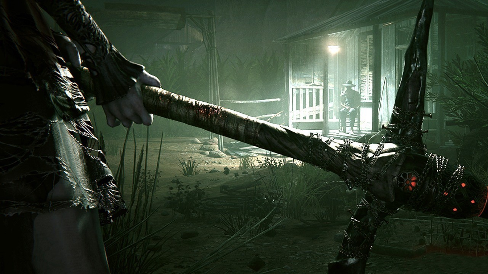

OUTLAST 2
Blake Langermann es un camarógrafo y documentalista que viaja junto a su esposa Lynn, una periodista de investigación. En este viaje se dirigen a una zona rural y recóndita del desierto de Arizona para investigar el misterioso asesinato de una mujer embarazada conocida como Jane Doe.
Sin embargo, tras sufrir un accidente de helicóptero al llegar al lugar, Lynn desaparece y Blake queda atrapado en medio de una secta religiosa fanática.
El pueblo de Arizona se llama Temple Gate y sus habitantes están liderados por el patriarca Sullivan Knoth, quien es uno de los sujetos de experimentación de la organización Murkoff y se considera un discípulo de Dios.
La gente que pertenece al culto cree que ha llegado el fin de los tiempos y persigue a Blake, a quien consideran un intruso profético.